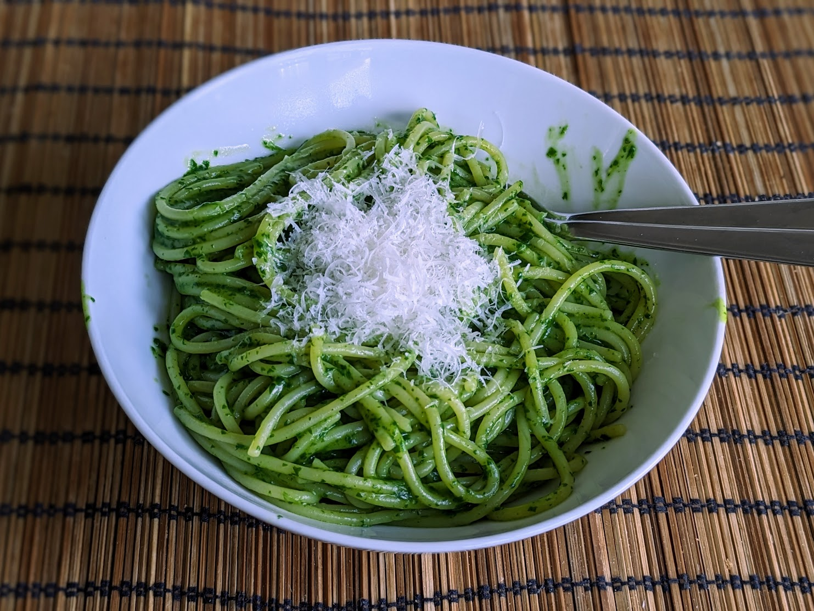

Pâtes à l'ail caramélisé et aux épinards

Pour 4 personnes :
- 500g de pâtes
- 120g de beurre
- Une grosse tête d'ail, ou deux petites
- 150g de pousses d'épinard
- (Facultatif) Une pincée de flocons de piment
- Un peu de parmesan
- Sel, poivre
- Faire préchauffer un four à 190°C. Couper le beurre en tranches, et les disposer au fond d'un plat à four à petite surface (par exemple, un moule à cake). Saler le beurre assez généreusement.
- Couper la tête d'ail en deux pour que chaque gousse soit coupée en deux, sans rien éplucher. Disposer les deux moitiés sur le beurre. Recouvrir le plat de papier alu, et enfourner 40 minutes.
- Sortir le plat du four, et retirer la peau de l'ail avec des pinces. Normalement, la chair tombe toute seule, sinon utiliser la pointe d'un couteau pour tout récupérer dans le beurre.
- Faire cuire les pâtes, en retirant deux minutes au temps de cuisson indiqué sur la boîte. Pendant ce temps, mixer les épinards avec le beurre, l'ail, les flocons de piment, un peu de sel, et pas mal de poivre.
- Lorsque le temp sde la cuisson des pâtes est écoulé, récupérer pas mal d'eau de cuisson (genre, 250mL), et égoutter les pâtes. On peut utiliser un peu d'eau de cuisson dans le mélange qu'on mixe pour que ça soit bien fluide, mais c'est pas obligatoire.
- Remettre les pâtes dans la casserole avec la sauce et un peu d'eau de cuisson, mélanger continuellement. Dès que ça commence à accrocher un peu, rajouter de l'eau de cuisson. Le tout dure environ deux minutes, il faut que la sauce soit bien uniforme sur les pâtes.
- Servir immédiatement, avec un peu de parmesan râpé pour garnir.
Retour à la liste des recettes